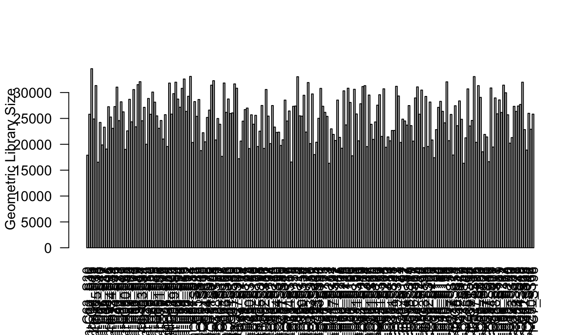
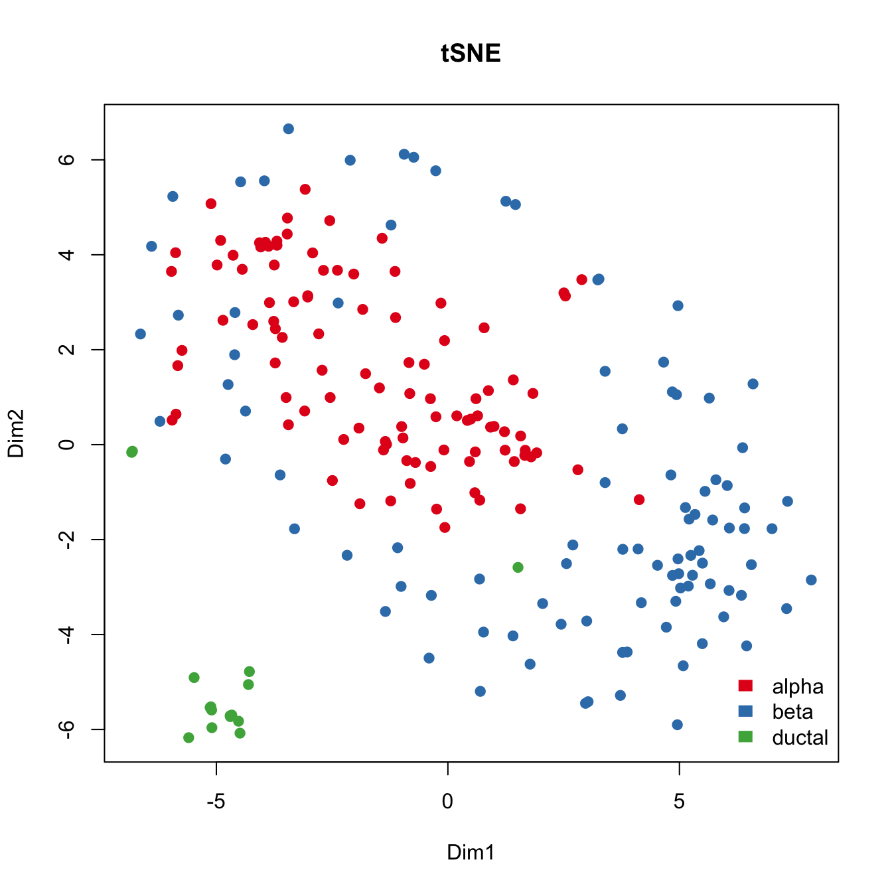
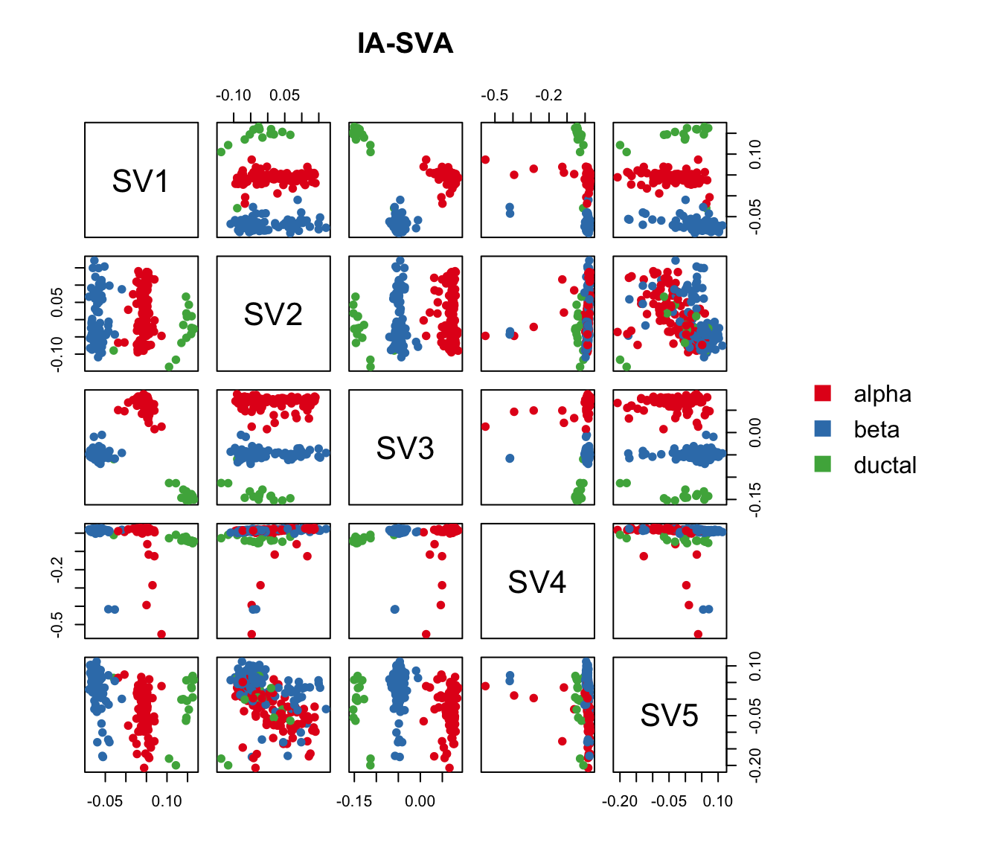
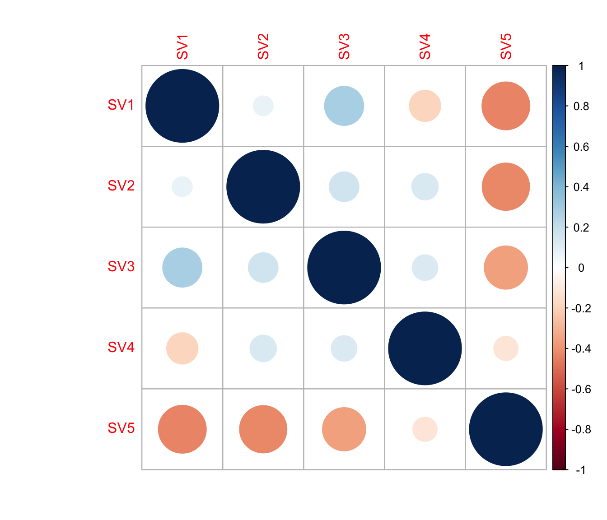
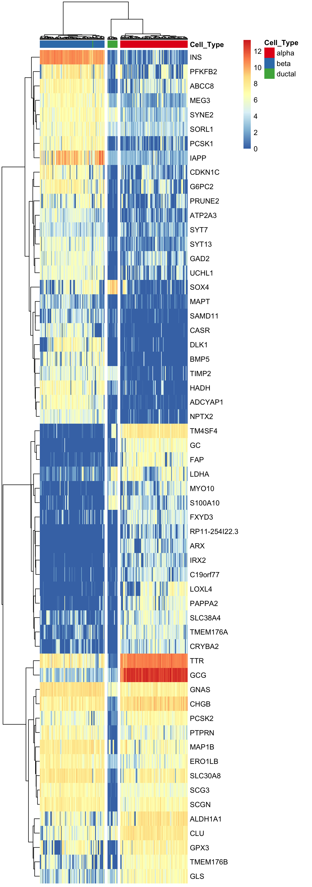
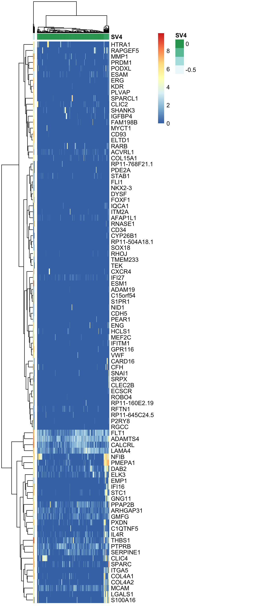
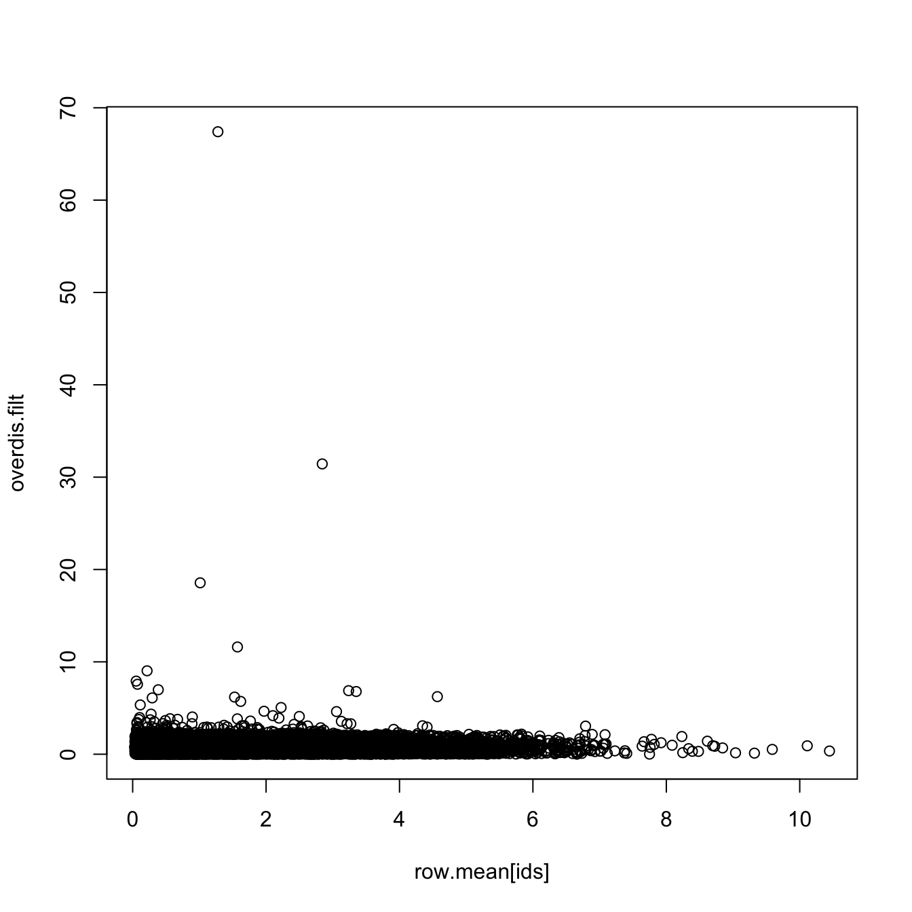
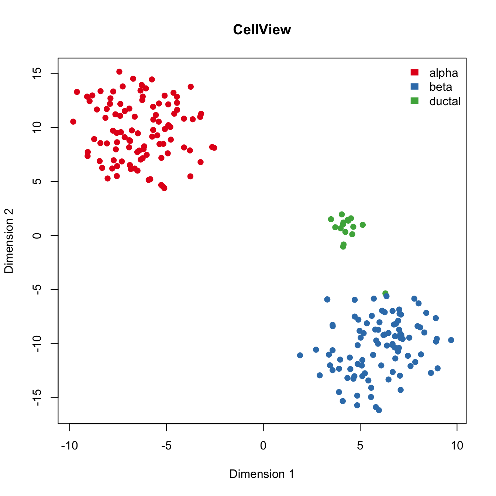
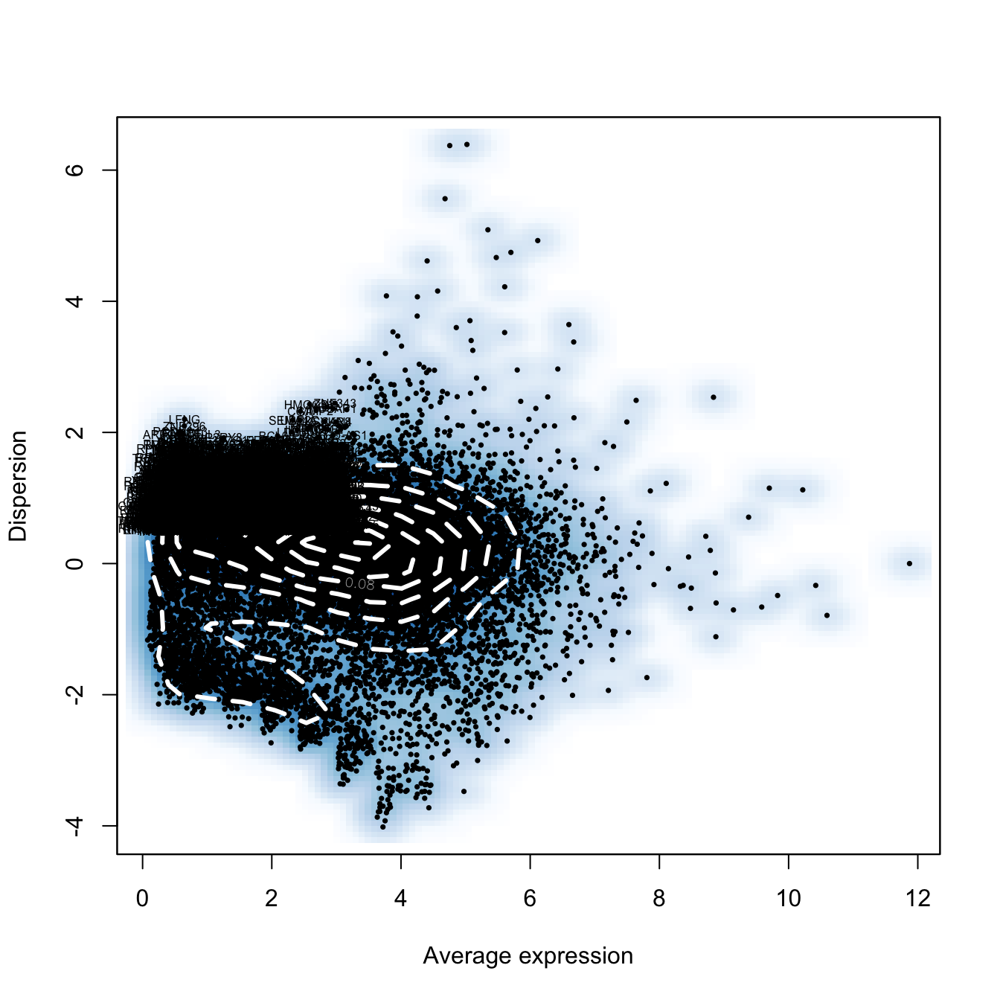
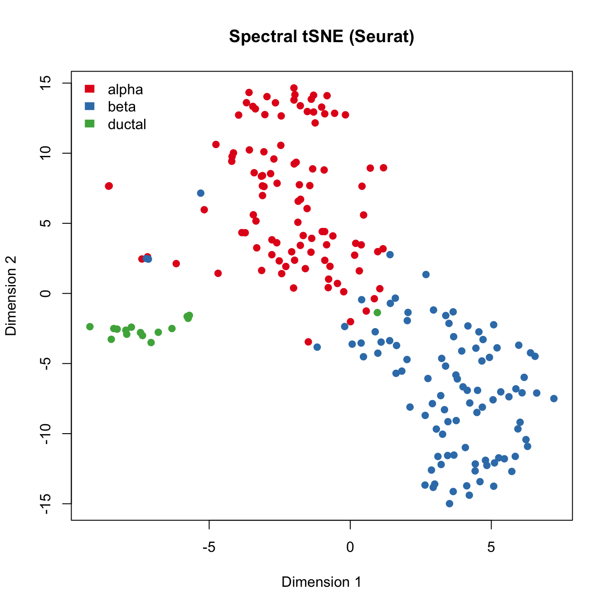

IA-SVA based feature selection improves the performance of clustering algorithms [1]
Donghyung Lee
2018-08-03
- Load packages
- Load the islet single cell RNA-Seq data
- Extract three cell types (GCG (alpha), INS (beta), KRT19 (ductal) expressing cells) from healthy (i.e., non-diabetic) subjects and filter out low-expressed genes
- Calculate the number of detected genes
- Run tSNE to cluster islet cells.
- Run IA-SVA
- Find marker genes for SV1 and SV3.
- Find marker genes for SV4.
- Run tSNE post IA-SVA, i.e., run tSNE on marker genes for SV1 and SV2 obtained from IA-SVA.
- Run CellView algorithm to visualize the data.
- Run Seurat to reduce dimensionality and visualize islet cells
- Session information
Last updated: 2018-08-03
workflowr checks: (Click a bullet for more information)-
✔ R Markdown file: up-to-date
Great! Since the R Markdown file has been committed to the Git repository, you know the exact version of the code that produced these results.
-
✔ Environment: empty
Great job! The global environment was empty. Objects defined in the global environment can affect the analysis in your R Markdown file in unknown ways. For reproduciblity it’s best to always run the code in an empty environment.
-
✔ Seed:
set.seed(20180731)The command
set.seed(20180731)was run prior to running the code in the R Markdown file. Setting a seed ensures that any results that rely on randomness, e.g. subsampling or permutations, are reproducible. -
✔ Session information: recorded
Great job! Recording the operating system, R version, and package versions is critical for reproducibility.
-
Great! You are using Git for version control. Tracking code development and connecting the code version to the results is critical for reproducibility. The version displayed above was the version of the Git repository at the time these results were generated.✔ Repository version: 2689835
Note that you need to be careful to ensure that all relevant files for the analysis have been committed to Git prior to generating the results (you can usewflow_publishorwflow_git_commit). workflowr only checks the R Markdown file, but you know if there are other scripts or data files that it depends on. Below is the status of the Git repository when the results were generated:
Note that any generated files, e.g. HTML, png, CSS, etc., are not included in this status report because it is ok for generated content to have uncommitted changes.Ignored files: Ignored: .DS_Store Ignored: .Rhistory Ignored: .Rproj.user/ Ignored: data/.DS_Store Ignored: inst/.DS_Store Ignored: inst/doc/.DS_Store Ignored: vignettes/.DS_Store Untracked files: Untracked: docs/figure/hidden_heterogeneity_glioblastoma.Rmd/ Untracked: output/CC_genes.long.txt Untracked: output/CC_genes.short.txt Untracked: output/Clustering_analyses_figure3_sv1.pdf Untracked: output/Patel_Glioblastoma_MGH30_CellCycle_Figure3ABCD.pdf Untracked: output/Patel_Glioblastoma_MGH30_Cellcycle_SV1_Genes_rsqcutoff0.3.txt Untracked: output/Patel_Glioblastoma_MGH30_Cellcycle_SV1_Genes_rsqcutoff0.4.txt Untracked: output/Patel_Glioblastoma_MGH30_iasva_SV1_genes_rsqcutoff0.3_pheatmap_iasvaV0.95_Figure3F.pdf
Expand here to see past versions:
The IA-SVA based feature selection can significantly improve the performance and utility of clustering algorithms (e.g., tSNE, hierarchical clustering). To illustrate how the IA-SVA method can be used to improve the performance of clustering algorithms, we used real-world single cell RNA sequencing (scRNA-Seq) data obtained from human pancreatic islet samples (Lawlor et. al., 2016). This dataset is included in a R data package (“iasvaExamples”) containing data examples for IA-SVA (https://github.com/dleelab/iasvaExamples). To install the ‘iasvaExamples’ package, follow the instruction provided in the GitHub page.
Load packages
rm(list=ls())
library(irlba)Loading required package: Matrixlibrary(iasva)
library(iasvaExamples)
library(Seurat)Loading required package: ggplot2Loading required package: cowplot
Attaching package: 'cowplot'The following object is masked from 'package:ggplot2':
ggsavelibrary(dbscan)
library(Rtsne)
library(pheatmap)
library(corrplot)corrplot 0.84 loadedlibrary(DescTools) #pcc i.e., Pearson's contingency coefficient
library(RColorBrewer)
library(SummarizedExperiment)Loading required package: GenomicRangesLoading required package: stats4Loading required package: BiocGenericsLoading required package: parallel
Attaching package: 'BiocGenerics'The following objects are masked from 'package:parallel':
clusterApply, clusterApplyLB, clusterCall, clusterEvalQ,
clusterExport, clusterMap, parApply, parCapply, parLapply,
parLapplyLB, parRapply, parSapply, parSapplyLBThe following objects are masked from 'package:Matrix':
colMeans, colSums, rowMeans, rowSums, whichThe following objects are masked from 'package:stats':
IQR, mad, sd, var, xtabsThe following objects are masked from 'package:base':
anyDuplicated, append, as.data.frame, basename, cbind,
colMeans, colnames, colSums, dirname, do.call, duplicated,
eval, evalq, Filter, Find, get, grep, grepl, intersect,
is.unsorted, lapply, lengths, Map, mapply, match, mget, order,
paste, pmax, pmax.int, pmin, pmin.int, Position, rank, rbind,
Reduce, rowMeans, rownames, rowSums, sapply, setdiff, sort,
table, tapply, union, unique, unsplit, which, which.max,
which.minLoading required package: S4Vectors
Attaching package: 'S4Vectors'The following object is masked from 'package:Matrix':
expandThe following object is masked from 'package:base':
expand.gridLoading required package: IRangesLoading required package: GenomeInfoDbLoading required package: BiobaseWelcome to Bioconductor
Vignettes contain introductory material; view with
'browseVignettes()'. To cite Bioconductor, see
'citation("Biobase")', and for packages 'citation("pkgname")'.Loading required package: DelayedArrayLoading required package: matrixStats
Attaching package: 'matrixStats'The following objects are masked from 'package:Biobase':
anyMissing, rowMediansLoading required package: BiocParallel
Attaching package: 'DelayedArray'The following objects are masked from 'package:matrixStats':
colMaxs, colMins, colRanges, rowMaxs, rowMins, rowRangesThe following objects are masked from 'package:base':
aperm, applycolor.vec <- brewer.pal(8, "Set1")
# Normalization.
normalize <- function (counts)
{
normfactor <- colSums(counts)
return(t(t(counts)/normfactor)*median(normfactor))
}Load the islet single cell RNA-Seq data
data("Lawlor_Islet_scRNAseq_Read_Counts")
data("Lawlor_Islet_scRNAseq_Annotations")
ls()[1] "color.vec" "Lawlor_Islet_scRNAseq_Annotations"
[3] "Lawlor_Islet_scRNAseq_Read_Counts" "normalize" counts <- Lawlor_Islet_scRNAseq_Read_Counts
anns <- Lawlor_Islet_scRNAseq_Annotations
dim(anns)[1] 638 26dim(counts)[1] 26542 638summary(anns) run cell.type COL1A1 INS
Length:638 Length:638 Min. :1.00 Min. :1.000
Class :character Class :character 1st Qu.:1.00 1st Qu.:1.000
Mode :character Mode :character Median :1.00 Median :1.000
Mean :1.03 Mean :1.414
3rd Qu.:1.00 3rd Qu.:2.000
Max. :2.00 Max. :2.000
PRSS1 SST GCG KRT19
Min. :1.000 Min. :1.000 Min. :1.000 Min. :1.000
1st Qu.:1.000 1st Qu.:1.000 1st Qu.:1.000 1st Qu.:1.000
Median :1.000 Median :1.000 Median :1.000 Median :1.000
Mean :1.038 Mean :1.039 Mean :1.375 Mean :1.044
3rd Qu.:1.000 3rd Qu.:1.000 3rd Qu.:2.000 3rd Qu.:1.000
Max. :2.000 Max. :2.000 Max. :2.000 Max. :2.000
PPY num.genes Cell_ID UNOS_ID
Min. :1.000 Min. :3529 10th_C1_S59 : 1 ACCG268 :136
1st Qu.:1.000 1st Qu.:5270 10th_C10_S104: 1 ACJV399 :108
Median :1.000 Median :6009 10th_C11_S96 : 1 ACEL337 :103
Mean :1.028 Mean :5981 10th_C13_S61 : 1 ACIW009 : 93
3rd Qu.:1.000 3rd Qu.:6676 10th_C14_S53 : 1 ACCR015A: 57
Max. :2.000 Max. :8451 10th_C16_S105: 1 ACIB065 : 57
(Other) :632 (Other) : 84
Age Biomaterial_Provider Gender Phenotype
Min. :22.00 IIDP : 45 Female:303 Non-Diabetic :380
1st Qu.:29.00 Prodo Labs:593 Male :335 Type 2 Diabetic:258
Median :42.00
Mean :39.63
3rd Qu.:53.00
Max. :56.00
Race BMI Cell_Type Patient_ID
African American:175 Min. :22.00 INS :264 P1 :136
Hispanic :165 1st Qu.:26.60 GCG :239 P8 :108
White :298 Median :32.95 KRT19 : 28 P3 :103
Mean :32.85 SST : 25 P7 : 93
3rd Qu.:35.80 PRSS1 : 24 P5 : 57
Max. :55.00 none : 21 P6 : 57
(Other): 37 (Other): 84
Sequencing_Run Batch Coverage Percent_Aligned
12t : 57 B1:193 Min. :1206135 Min. :0.8416
4th : 57 B2:148 1st Qu.:2431604 1st Qu.:0.8769
9th : 57 B3:297 Median :3042800 Median :0.8898
10t : 56 Mean :3160508 Mean :0.8933
7th : 55 3rd Qu.:3871697 3rd Qu.:0.9067
3rd : 53 Max. :5931638 Max. :0.9604
(Other):303
Mitochondrial_Fraction Num_Expressed_Genes
Min. :0.003873 Min. :3529
1st Qu.:0.050238 1st Qu.:5270
Median :0.091907 Median :6009
Mean :0.108467 Mean :5981
3rd Qu.:0.142791 3rd Qu.:6676
Max. :0.722345 Max. :8451
ContCoef(table(anns$Gender, anns$Cell_Type))[1] 0.225969ContCoef(table(anns$Phenotype, anns$Cell_Type))[1] 0.1145096ContCoef(table(anns$Race, anns$Cell_Type))[1] 0.3084146ContCoef(table(anns$Patient_ID, anns$Cell_Type))[1] 0.5232058ContCoef(table(anns$Batch, anns$Cell_Type))[1] 0.3295619The annotations describing the islet samples and experimental settings are stored in “anns” and the read counts information is stored in “counts”.
Extract three cell types (GCG (alpha), INS (beta), KRT19 (ductal) expressing cells) from healthy (i.e., non-diabetic) subjects and filter out low-expressed genes
counts <- counts[, (anns$Phenotype!="Non-Diabetic")&
((anns$Cell_Type=="GCG")|
(anns$Cell_Type=="INS")|
(anns$Cell_Type=="KRT19"))]
anns <- subset(anns, (Phenotype!="Non-Diabetic")&
((Cell_Type=="GCG")|
(Cell_Type=="INS")|
(Cell_Type=="KRT19")))
dim(counts)[1] 26542 213
dim(anns)[1] 213 26
anns <- droplevels(anns)
prop.zeros <- sum(counts==0)/length(counts)
prop.zeros[1] 0.6917875
filter = apply(counts, 1, function(x) length(x[x>5])>=3)
counts = counts[filter,]
dim(counts)[1] 16005 213
prop.zeros <- sum(counts==0)/length(counts)
prop.zeros[1] 0.4956072
Patient_ID <- anns$Patient_ID
Cell_Type <- anns$Cell_Type
levels(Cell_Type) <- c("alpha", "beta", "ductal")
Batch <- anns$Batch
table(Cell_Type)Cell_Type alpha beta ductal 101 96 16
raw.counts <- counts
summary(colSums(counts))Min. 1st Qu. Median Mean 3rd Qu. Max. 473182 1014530 1263975 1310323 1492478 3090459
counts <- normalize(counts)
summary(colSums(counts))Min. 1st Qu. Median Mean 3rd Qu. Max. 1263975 1263975 1263975 1263975 1263975 1263975
Calculate the number of detected genes
It is well known that the number of detected genes in each cell explains a very large portion of variability in scRNA-Seq data (Hicks et. al. 2015 BioRxiv, McDavid et. al. 2016 Nature Biotechnology). Frequently, the first principal component of log-transformed scRNA-Seq read counts is highly correlated with the number of detected genes (e.g., r > 0.9). Here, we calculate the number of detected genes for islet cells, which will be used as an known factor in the IA-SVA analyses.
Num_Detected_Genes <- colSums(counts>0)
Geo_Lib <- colSums(log(counts+1))
summary(Geo_Lib) Min. 1st Qu. Median Mean 3rd Qu. Max.
16331 21429 25600 25262 28659 34613 barplot(Geo_Lib, xlab="Cell", las=2, ylab = "Geometric Library Size")
lcounts <- log(counts + 1)
# PC1 and Geometric library size correlation
pc1 = irlba(lcounts - rowMeans(lcounts), 1)$v[,1] ## partial SVD
cor(Geo_Lib, pc1)[1] -0.9796015Run tSNE to cluster islet cells.
For comparison purposes, we applied tSNE on read counts of all genes. We used the Rtsne R package with default settings for this analyses. Genes are colored with respect to the expression of marker genes.
set.seed(32354388)
tsne.res <- Rtsne(t(lcounts), dims = 2)
plot(tsne.res$Y, main="tSNE", xlab="Dim1", ylab="Dim2", pch=21,
col=color.vec[Cell_Type], bg=color.vec[Cell_Type], oma=c(4,4,6,12))
legend("bottomright", levels(Cell_Type), border="white",fill=color.vec, bty="n")
Run IA-SVA
Here, we first run IA-SVA using Patient_ID, Batch and Geo_Lib_Size as known factors and identify 5 hidden factors. Since cell type is not used as a known factor in this analyses, IA-SVA will detect the heterogeneity associated with the cell types.
mod <- model.matrix(~Patient_ID+Batch+Geo_Lib)
summ_exp <- SummarizedExperiment(assays = counts)
iasva.res<- iasva(summ_exp, mod[,-1],verbose=FALSE, permute=FALSE, num.sv=5)IA-SVA running...
SV 1 Detected!
SV 2 Detected!
SV 3 Detected!
SV 4 Detected!
SV 5 Detected!
# of significant surrogate variables: 5iasva.sv <- iasva.res$sv
#with color-coding based on true cell-type
pairs(iasva.sv, main="IA-SVA", pch=21, col=color.vec[Cell_Type],
bg=color.vec[Cell_Type], oma=c(4,4,6,14))
legend("right", levels(Cell_Type), border="white", fill=color.vec, bty="n")
cor(Num_Detected_Genes, iasva.sv) SV1 SV2 SV3 SV4 SV5
[1,] -0.06492242 -0.6767266 -0.09183223 -0.1677585 0.7053465cor(Geo_Lib, iasva.sv) SV1 SV2 SV3 SV4 SV5
[1,] -0.2044236 -0.7212868 -0.275179 -0.1841835 0.7725583corrplot(cor(iasva.sv))
Find marker genes for SV1 and SV3.
Here, using the find_markers() function we find marker genes significantly associated with SV1 and SV3 (multiple testing adjusted p-value < 0.05, default significance cutoff, a high R-squared value: R-squared > 0.4).
# try different R2 thresholds
pdf("Clustering_analyses_figure4_islets_sv1_3.pdf")
r2.results <- study_R2(summ_exp, iasva.sv,selected.svs=c(1,3), no.clusters=3)# of markers (SV1): 682# of markers (SV3): 534total # of unique markers: 979# of markers (SV1): 357# of markers (SV3): 281total # of unique markers: 519# of markers (SV1): 207# of markers (SV3): 161total # of unique markers: 309# of markers (SV1): 123# of markers (SV3): 99total # of unique markers: 192# of markers (SV1): 78# of markers (SV3): 62total # of unique markers: 129# of markers (SV1): 44# of markers (SV3): 37total # of unique markers: 79# of markers (SV1): 34# of markers (SV3): 26total # of unique markers: 58# of markers (SV1): 25# of markers (SV3): 20total # of unique markers: 44# of markers (SV1): 19# of markers (SV3): 14total # of unique markers: 33# of markers (SV1): 11# of markers (SV3): 9total # of unique markers: 20# of markers (SV1): 8# of markers (SV3): 7total # of unique markers: 15# of markers (SV1): 4# of markers (SV3): 7total # of unique markers: 11# of markers (SV1): 2# of markers (SV3): 5total # of unique markers: 7# of markers (SV1): 2# of markers (SV3): 3total # of unique markers: 5# of markers (SV1): 1# of markers (SV3): 3total # of unique markers: 4# of markers (SV1): 0# of markers (SV3): 1total # of unique markers: 1# of markers (SV1): 0# of markers (SV3): 0total # of unique markers: 0dev.off()quartz_off_screen
2 marker.counts <- find_markers(summ_exp, as.matrix(iasva.sv[,c(1,3)])
, rsq.cutoff = 0.4)# of markers (SV1): 34# of markers (SV3): 26total # of unique markers: 58nrow(marker.counts)[1] 58anno.col <- data.frame(Cell_Type=Cell_Type)
rownames(anno.col) <- colnames(marker.counts)
head(anno.col) Cell_Type
4th-C63_S30 alpha
4th-C66_S36 alpha
4th-C7_S15 beta
4th-C18_S31 alpha
4th-C5_S8 beta
4th-C57_S18 alphacell.type.col <- color.vec[1:3]
names(cell.type.col) <- c("alpha","beta","ductal")
anno.colors <- list(Cell_Type=cell.type.col)
pheatmap(log(marker.counts+1), show_colnames =FALSE,
clustering_method = "ward.D2", cutree_cols = 3,
annotation_col = anno.col, annotation_colors = anno.colors)
In the case of islet cells, marker genes are well established and IA-SVA did an excellent job of redefining these markers along with some other highly informative genes. Therefore, IA-SVA can be effectively used to uncover heterogeneity associated with cell types and can reveal genes that are expressed in a cell-specific manner.
Find marker genes for SV4.
Here, using the find_markers() function we find marker genes significantly associated with SV4 (multiple testing adjusted p-value < 0.05, default significance cutoff, a high R-squared value: R-squared > 0.3).
marker.counts.SV4 <- find_markers(summ_exp, as.matrix(iasva.sv[,c(4)]),
rsq.cutoff = 0.3)# of markers (): 94total # of unique markers: 94nrow(marker.counts.SV4)[1] 94anno.col <- data.frame(SV4=iasva.sv[,4])
rownames(anno.col) <- colnames(marker.counts)
head(anno.col) SV4
4th-C63_S30 0.022045049
4th-C66_S36 0.006979656
4th-C7_S15 0.014475352
4th-C18_S31 0.012836294
4th-C5_S8 0.009518166
4th-C57_S18 -0.126329593pheatmap(log(marker.counts.SV4+1), show_colnames =FALSE,
clustering_method = "ward.D2", cutree_cols = 2,
annotation_col = anno.col)
Run tSNE post IA-SVA, i.e., run tSNE on marker genes for SV1 and SV2 obtained from IA-SVA.
Here, we apply tSNE on the marker genes for SV1 and SV2
set.seed(344588)
tsne.res.iasva <- Rtsne(unique(t(log(marker.counts+1))), dims = 2)
plot(tsne.res.iasva$Y, main="IA-SVA + tSNE", xlab="Dimension 1",
ylab="Dimension 2", pch=21, col=color.vec[Cell_Type],
bg=color.vec[Cell_Type], oma=c(4,4,6,12))
legend("topright", levels(Cell_Type), border="white", fill=color.vec, bty="n")
tSNE conducted on genes selected via IA-SVA very clearly seperates cells into their corresponding cell types. Moreover, this analyses also revealed one cell (green cell clustered together with blue cells) that is potentially mislabeled in the original analyses.
Run CellView algorithm to visualize the data.
# specify gene number to select for
gene_num <- 1000
# calcuclate dispersion
row.var <- apply(lcounts,1,sd)**2
row.mean <- apply(lcounts,1,mean)
dispersion <- row.var/row.mean
# generate sequence of bins
bins <- seq(from = min(row.mean), to = max(row.mean), length.out = 20)
# sort mean expression data into the bins
bin.exp <- row.mean
# sort the values
bin.sort <- sort(bin.exp, decreasing = FALSE)
# vector of bin assignment
cuts <- cut(x = bin.exp, breaks = bins, labels = FALSE)
# find which are NA and change to zero
na.ids <- which(is.na(cuts) == TRUE)
cuts[na.ids] <- 0
# create an empty vector for overdispersion
overdispersion <- NULL
# for each gene and bin index, calculate median, mad, and then normalized dispersion
# first loop through length of bins found
for (k in 1:length(names(table(cuts)))) {
# find index of bins
bin.id <- which(cuts == names(table(cuts))[k])
# median of all genes in the bin
median.bin <- median(dispersion[bin.id], na.rm = TRUE)
# calculate mad (median absolute deviation)
mad.bin <- mad(dispersion[bin.id])
# calculate norm dispersion for each gene
for (m in 1:length(bin.id)) {
norm.dispersion <- abs(dispersion[bin.id[m]] - median.bin)/mad.bin
overdispersion <- c(overdispersion, norm.dispersion)
}
}
# remove nans
overdis.na <- which(is.na(overdispersion) == TRUE)
if (length(overdis.na) > 0) {
overdis.filt <- overdispersion[-overdis.na]
} else {
overdis.filt <- overdispersion
}
# plot mean expression vs overdisperssion
ids <- which(names(overdis.filt) %in% names(row.mean))
plot(row.mean[ids], overdis.filt)
# Do t-sne using top over-dispersed genes (apply mean expression filter too)
rank.ov <- order(overdis.filt, decreasing = TRUE)
ov.genes <- names(overdis.filt[rank.ov[1:gene_num]])
log.sel <- lcounts[ov.genes,]
all1 <- t(log.sel)
# Remove groups that are all zeros
df <- all1[,apply(all1, 2, var, na.rm=TRUE) != 0]
set.seed(34544532)
rtsne_out <- Rtsne(as.matrix(df), dims = 3)
# Set rownames of matrix to tsne matrix
rownames(rtsne_out$Y) <- rownames(df)
tsne.cellview <- rtsne_out$Y
plot(tsne.cellview[,c(1,2)], main="CellView", xlab="Dimension 1",
ylab="Dimension 2",pch=21, col=color.vec[Cell_Type],
bg=color.vec[Cell_Type], oma=c(4,4,6,12))
legend("topright", levels(Cell_Type), border="white", fill=color.vec, bty="n")
Run Seurat to reduce dimensionality and visualize islet cells
set.seed(12344)
seurat.obj <- CreateSeuratObject(raw.data=raw.counts,
min.cells=3, min.genes=200, project="Seurat_Comp")
names(Patient_ID) <- rownames(seurat.obj@meta.data)
seurat.obj <- AddMetaData(object = seurat.obj,
metadata = Patient_ID, col.name = "patient.id")
names(Batch) <- rownames(seurat.obj@meta.data)
seurat.obj <- AddMetaData(object = seurat.obj,
metadata = Batch, col.name = "batch")
names(Geo_Lib) <- rownames(seurat.obj@meta.data)
seurat.obj <- AddMetaData(object = seurat.obj,
metadata = Geo_Lib, col.name = "geo.lib")
# Normalizing the data
seurat.obj <- NormalizeData(object = seurat.obj,
normalization.method = "LogNormalize",
scale.factor = median(colSums(raw.counts)))
# Detection of variable genes across the single cells
seurat.obj <- FindVariableGenes(object = seurat.obj,
mean.function = ExpMean, dispersion.function = LogVMR,
x.low.cutoff = 0.0125, x.high.cutoff = 3, y.cutoff = 0.5)
length(x = seurat.obj@var.genes)[1] 2933# Scaling the data and removing unwanted sources of variation
seurat.obj <- ScaleData(object = seurat.obj,
vars.to.regress = c("patient.id", "batch", "geo.lib"))Regressing out: patient.id, batch, geo.lib
Time Elapsed: 9.59692406654358 secsScaling data matrix# Perform linear dimensional reduction
seurat.obj <- RunPCA(object = seurat.obj,
pc.genes = seurat.obj@var.genes,
do.print = TRUE, pcs.print = 1:5,
genes.print = 5)[1] "PC1"
[1] "CCDC108" "SGIP1" "MBD5" "RP11-222A11.1"
[5] "GLRA3"
[1] ""
[1] "DEFB1" "VTCN1" "PKHD1" "ITGB6" "PROM1"
[1] ""
[1] ""
[1] "PC2"
[1] "ELTD1" "GPR116" "ERG" "VWF" "DYSF"
[1] ""
[1] "VTCN1" "DEFB1" "PKHD1" "ITGB6" "LGALS4"
[1] ""
[1] ""
[1] "PC3"
[1] "PAQR4" "SLITRK6" "BUB1B" "MTFR2" "TFAP2A"
[1] ""
[1] "GCKR" "LYPD6B" "LGALS4" "C6orf222"
[5] "RP4-534N18.2"
[1] ""
[1] ""
[1] "PC4"
[1] "BUB1" "ASPM" "KIFC1" "RAD51" "DEPDC1"
[1] ""
[1] "SLIT2" "COL5A1" "TFAP2A" "RUNX2" "SFRP1"
[1] ""
[1] ""
[1] "PC5"
[1] "FHL3" "FGG" "MAMLD1" "PRKCG" "KRT222"
[1] ""
[1] "GLRA1" "EPB41L2" "ADRA2A" "TET1" "DACH2"
[1] ""
[1] ""# Run tSNE (Spectral tSNE)
set.seed(8883)
seurat.obj <- RunTSNE(object = seurat.obj, dims.use = 1:5, do.fast = TRUE)
# tSNE plot with color-coding of true cell types
plot(seurat.obj@dr$tsne@cell.embeddings[,c(1,2)],
main="Spectral tSNE (Seurat)", xlab="Dimension 1",
ylab="Dimension 2",pch=21, col=color.vec[Cell_Type],
bg=color.vec[Cell_Type], oma=c(4,4,6,12))
legend("topleft", levels(Cell_Type), border="white", fill=color.vec, bty="n")
pdf(file="output/Lawlor_Islets_3Cells_tSNE_IA-SVA_Fig4AB.pdf", width=9, height=5)
layout(matrix(c(1,2), nrow=1, ncol=2, byrow=TRUE))
plot(tsne.res$Y, main="tSNE", xlab="Dimension 1",
ylab="Dimension 2", pch=21, col=color.vec[Cell_Type],
bg=color.vec[Cell_Type])
legend("topleft", levels(Cell_Type), border="white",
fill=color.vec, bty="n")
plot(tsne.res.iasva$Y, main="IA-SVA + tSNE", xlab="Dimension 1",
ylab="Dimension 2", pch=21, col=color.vec[Cell_Type],
bg=color.vec[Cell_Type])
legend("topright", levels(Cell_Type), border="white",
fill=color.vec, bty="n")
dev.off()quartz_off_screen
2 anno.col <- data.frame(Cell_Type=Cell_Type)
rownames(anno.col) <- colnames(marker.counts)
head(anno.col) Cell_Type
4th-C63_S30 alpha
4th-C66_S36 alpha
4th-C7_S15 beta
4th-C18_S31 alpha
4th-C5_S8 beta
4th-C57_S18 alphacell.type.col <- color.vec[1:3]
names(cell.type.col) <- c("alpha","beta","ductal")
anno.colors <- list(Cell_Type=cell.type.col)
pheatmap(log(marker.counts+1), show_colnames =FALSE,
clustering_method = "ward.D2", cutree_cols = 3,
annotation_col = anno.col, annotation_colors = anno.colors,
filename="output/Lawlor_Islets_3Cells_IASVA_SV1SV3_rsqcutoff0.3_pheatmap_iasvaV0.95_Figure4_C.pdf",
width=6, height=17)pdf(file="output/Lawlor_Islets_3Cells_IASVA_pairs4SVs_iasvaV0.95_black_FigS6.pdf",
width=4, height=4)
pairs(iasva.sv[,1:4], pch=21, col="black", bg="black")
dev.off()quartz_off_screen
2 pdf(file="output/Lawlor_Islets_3Cells_IASVA_pairs4SVs_iasvaV0.95_color_FigS6.pdf",
width=4, height=4)
pairs(iasva.sv[,1:4], pch=21, col=color.vec[Cell_Type],
bg=color.vec[Cell_Type])
dev.off()quartz_off_screen
2 ## 1,2
pdf(file="output/Lawlor_Islets_3Cells_CellView_Seurat_FigS.pdf", width=9, height=5)
layout(matrix(c(1,2), nrow=1, ncol=2, byrow=TRUE))
plot(tsne.cellview[,c(1,2)], main="CellView", xlab="Dimension 1",
ylab="Dimension 2",pch=21, col=color.vec[Cell_Type],
bg=color.vec[Cell_Type], oma=c(4,4,6,12))
legend("topright", levels(Cell_Type), border="white",
fill=color.vec, bty="n")
plot(seurat.obj@dr$tsne@cell.embeddings[,c(1,2)],
main="Spectral tSNE (Seurat)", xlab="Dimension 1",
ylab="Dimension 2",pch=21, col=color.vec[Cell_Type],
bg=color.vec[Cell_Type], oma=c(4,4,6,12))
legend("topleft", levels(Cell_Type), border="white",
fill=color.vec, bty="n")
dev.off()quartz_off_screen
2 write.table(as.data.frame(rownames(marker.counts)),
file="output/Lawlor_Islets_3Cells_SV1_SV3_Cell_Type_Genes_rsqcutoff0.3.txt",
quote=F, row.names=F, col.names=F, sep=" ")write.table(as.data.frame(rownames(marker.counts.SV4)),
file="output/Lawlor_Islets_3Cells_SV4_Genes_rsqcutoff0.3.txt", quote=F,
row.names=F, col.names=F, sep=" ")
anno.col <- data.frame(SV4=iasva.sv[,4])
rownames(anno.col) <- colnames(marker.counts)
head(anno.col) SV4
4th-C63_S30 0.022045049
4th-C66_S36 0.006979656
4th-C7_S15 0.014475352
4th-C18_S31 0.012836294
4th-C5_S8 0.009518166
4th-C57_S18 -0.126329593pheatmap(log(marker.counts.SV4+1), show_colnames =FALSE,
clustering_method = "ward.D2", cutree_cols = 2,
annotation_col = anno.col,
filename="output/Lawlor_Islets_3Cells_IASVA_SV4_rsqcutoff0.3_pheatmap_iasvaV0.95.pdf",
width=8, height=14)Session information
sessionInfo()R version 3.5.0 (2018-04-23)
Platform: x86_64-apple-darwin15.6.0 (64-bit)
Running under: macOS Sierra 10.12.6
Matrix products: default
BLAS: /Library/Frameworks/R.framework/Versions/3.5/Resources/lib/libRblas.0.dylib
LAPACK: /Library/Frameworks/R.framework/Versions/3.5/Resources/lib/libRlapack.dylib
locale:
[1] en_US.UTF-8/en_US.UTF-8/en_US.UTF-8/C/en_US.UTF-8/en_US.UTF-8
attached base packages:
[1] parallel stats4 stats graphics grDevices utils datasets
[8] methods base
other attached packages:
[1] SummarizedExperiment_1.10.1 DelayedArray_0.6.1
[3] BiocParallel_1.14.2 matrixStats_0.53.1
[5] Biobase_2.40.0 GenomicRanges_1.32.3
[7] GenomeInfoDb_1.16.0 IRanges_2.14.10
[9] S4Vectors_0.18.3 BiocGenerics_0.26.0
[11] RColorBrewer_1.1-2 DescTools_0.99.24
[13] corrplot_0.84 pheatmap_1.0.10
[15] Rtsne_0.13 dbscan_1.1-2
[17] Seurat_2.3.2 cowplot_0.9.2
[19] ggplot2_2.2.1.9000 iasvaExamples_1.0.0
[21] iasva_0.99.3 irlba_2.3.2
[23] Matrix_1.2-14
loaded via a namespace (and not attached):
[1] snow_0.4-2 backports_1.1.2 Hmisc_4.1-1
[4] workflowr_1.0.1 VGAM_1.0-5 plyr_1.8.4
[7] igraph_1.2.1 lazyeval_0.2.1 splines_3.5.0
[10] digest_0.6.15 foreach_1.4.4 htmltools_0.3.6
[13] lars_1.2 gdata_2.18.0 magrittr_1.5
[16] checkmate_1.8.5 cluster_2.0.7-1 mixtools_1.1.0
[19] ROCR_1.0-7 sfsmisc_1.1-2 recipes_0.1.3
[22] gower_0.1.2 dimRed_0.1.0 R.utils_2.6.0
[25] colorspace_1.3-2 dplyr_0.7.5 jsonlite_1.5
[28] RCurl_1.95-4.10 bindr_0.1.1 zoo_1.8-2
[31] survival_2.42-3 iterators_1.0.9 ape_5.1
[34] glue_1.2.0 DRR_0.0.3 gtable_0.2.0
[37] ipred_0.9-6 zlibbioc_1.26.0 XVector_0.20.0
[40] kernlab_0.9-26 ddalpha_1.3.3 prabclus_2.2-6
[43] DEoptimR_1.0-8 abind_1.4-5 scales_0.5.0
[46] mvtnorm_1.0-8 Rcpp_0.12.17 dtw_1.20-1
[49] metap_0.9 htmlTable_1.12 tclust_1.4-1
[52] magic_1.5-8 reticulate_1.8 bit_1.1-14
[55] proxy_0.4-22 foreign_0.8-70 mclust_5.4
[58] SDMTools_1.1-221 Formula_1.2-3 tsne_0.1-3
[61] lava_1.6.1 prodlim_2018.04.18 htmlwidgets_1.2
[64] FNN_1.1 gplots_3.0.1 fpc_2.1-11
[67] acepack_1.4.1 modeltools_0.2-21 ica_1.0-2
[70] manipulate_1.0.1 pkgconfig_2.0.1 R.methodsS3_1.7.1
[73] flexmix_2.3-14 nnet_7.3-12 caret_6.0-80
[76] tidyselect_0.2.4 rlang_0.2.1 reshape2_1.4.3
[79] munsell_0.4.3 tools_3.5.0 ranger_0.10.1
[82] pls_2.6-0 ggridges_0.5.0 broom_0.4.4
[85] evaluate_0.10.1 geometry_0.3-6 stringr_1.3.1
[88] yaml_2.1.19 bit64_0.9-7 ModelMetrics_1.1.0
[91] knitr_1.20 fitdistrplus_1.0-9 robustbase_0.93-0
[94] caTools_1.17.1 purrr_0.2.5 RANN_2.5.1
[97] bindrcpp_0.2.2 pbapply_1.3-4 nlme_3.1-137
[100] whisker_0.3-2 R.oo_1.22.0 RcppRoll_0.3.0
[103] hdf5r_1.0.0 compiler_3.5.0 rstudioapi_0.7
[106] png_0.1-7 tibble_1.4.2 stringi_1.2.2
[109] lattice_0.20-35 trimcluster_0.1-2 psych_1.8.4
[112] diffusionMap_1.1-0 pillar_1.2.3 lmtest_0.9-36
[115] data.table_1.11.4 bitops_1.0-6 R6_2.2.2
[118] latticeExtra_0.6-28 KernSmooth_2.23-15 gridExtra_2.3
[121] codetools_0.2-15 boot_1.3-20 MASS_7.3-50
[124] gtools_3.5.0 assertthat_0.2.0 CVST_0.2-2
[127] rprojroot_1.3-2 withr_2.1.2 mnormt_1.5-5
[130] GenomeInfoDbData_1.1.0 expm_0.999-2 diptest_0.75-7
[133] doSNOW_1.0.16 grid_3.5.0 rpart_4.1-13
[136] timeDate_3043.102 tidyr_0.8.1 class_7.3-14
[139] rmarkdown_1.9 segmented_0.5-3.0 git2r_0.21.0
[142] lubridate_1.7.4 scatterplot3d_0.3-41 base64enc_0.1-3 This reproducible R Markdown analysis was created with workflowr 1.0.1